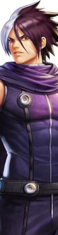
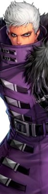

K Dash🔥
A inspiração para o aparecimento de K' e Maxima pode ser encontrada no jogo de arcade Psikyo The Fallen Angels. A ideia de K' usar óculos escuros foi tirada por outro personagem de Fallen Angel. Seu homônimo foi tirado de um personagem clone da light novel Blue Knight Berserga Monogatari, que se passa no mesmo universo da série de anime Armored Trooper Votoms . Durante as fases iniciais de desenvolvimento de The King of Fighters '99 , a introdução de K na série pretendia remover os personagens populares Kyo Kusanagi e Iori Yagami do elenco, embora essa ideia tenha sido posteriormente descartada.CAC Yamasaki previu que K' seria popular em seu lançamento, porém essa previsão nunca se tornou realidade. Em uma entrevista ele comenta que K' era "um pouco simples demais"
Mais tarde, K' receberia uma ligeira reformulação em seu cabelo devido ao protagonista de Garou: Marca dos Lobos se parecer com K'. Isso fez com que o designer supervisor entrasse em pânico ao perceber isso. Para The King of Fighters XIII , o produtor Masaaki Kukineo menciona que a equipe estava buscando uma versão mais "legal" de K', onde ele agora mantém seus óculos escuros durante a luta. Ele queria que os fãs prestassem muita atenção às suas novas animações.
Informações pessoais:
| K Dash | |
|---|---|
| Nome Completo | K' ou Kdash (nome verdadeiro desconhecido) |
| Data de nascimento | Desconhecido; implica ter entre 16 e 18 anos |
| Local de nascimento | Desconhecido |
| Altura | 1,83 |
| Peso | 65kg |
| Não gosta | Doces |
| Comida favorita | Carne seca |
| Esporte | Nenhum (odeia exercicios) |
| Arma | Nenhum (usa uma luva especial que mantém seu poder sob controle; ele também usa óculos escuros como projétil) |
| Estilo de Luta | Violência Pura + Jeet Kune Do |
Personagens relacionados:
Os personagens abaixo possuem algum tipo de ligação positiva ou negativa com K' Dash🔥
| Selecione o Personagem | |
|---|---|
WhipWhip cujo nome verdadeiro é Seirah, apareceu pela primeira vez em The King of Fighters '99 como o novo membro do Ikari Warriors Team . Ela é um clone da falecida irmã de K , que compartilha seu nome verdadeiro. |
|
KulaKula Diamond foi criada pelos NESTS com o objetivo de destruir K'Dash, mas durante sua jornada eles se tornaram aliados e passaram a buscar uma maneira de destruir o seus criadores, o grupo NESTS. Este laço entre os dois fez com que K' cuidasse de Kula como uma irmã mais nova. |
|
KyoK'Dash foi infundido com o DNA de Kyo Kusanagi, que lhe deu o poder de pirocinese. Durante o programa, as memórias de K' foram manipuladas, e ele foi forçado a acreditar que ele era clone de Krizalid. |
|
MaximaK'Dash e Máxima são parceiros de equipe e tem uma boa relação. K' costuma xingar Maxima - como "estúpido", "idiota" etc. - mas na verdade confia na confiabilidade de seu parceiro. Ele dificilmente é educado e é sempre rude, mesmo com as pessoas próximas a ele. Como K' geralmente expressa suas preocupações de uma maneira "durão", Maxima, brincando, o chama de desonesto ou rígido. Por causa disso, K' frequentemente deixava Maxima cuidar de quaisquer necessidades sociais em seu lugar. |
|
|  | NamelessParece não existir uma rivalidade ou parceria entre Kdash e Nameless. A unica ligação encontrada entre eles é o DNA de Nameless que foi inserido em K' quando este estava sobre a influencia dos NESTS. |
|  | KrizalidK' foi manipulado pela NESTS a acreditar que ele era clone de Krizalid, mas a verdade é que Krizalid que era o clone de K. Após derrotar Krizalid, K' descobre que ele era apenas um peão da NESTS, e logo em seguida Krizalid é executado por seu superior. Pouco depois, Igniz revela a K' e sua equipe que K', Kula, Krizalid e K9999 eram meramente humanos modificados (ou clones) criados exclusivamente para o entretenimento pessoal dele (Igniz). |